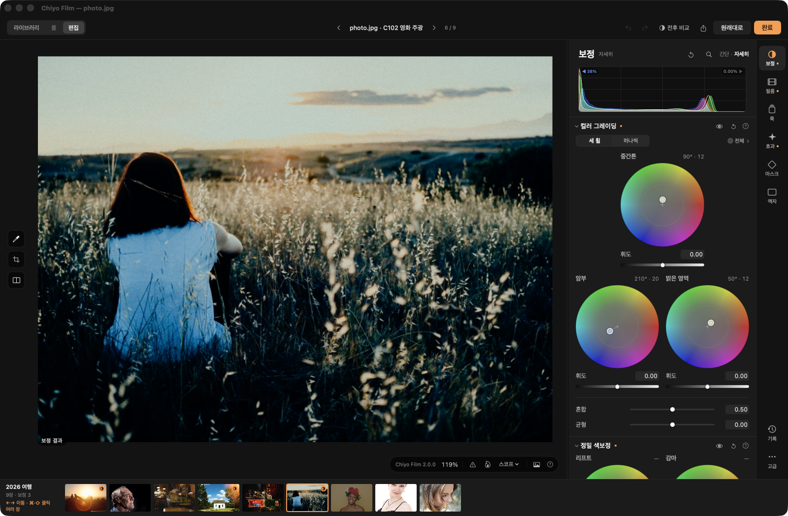
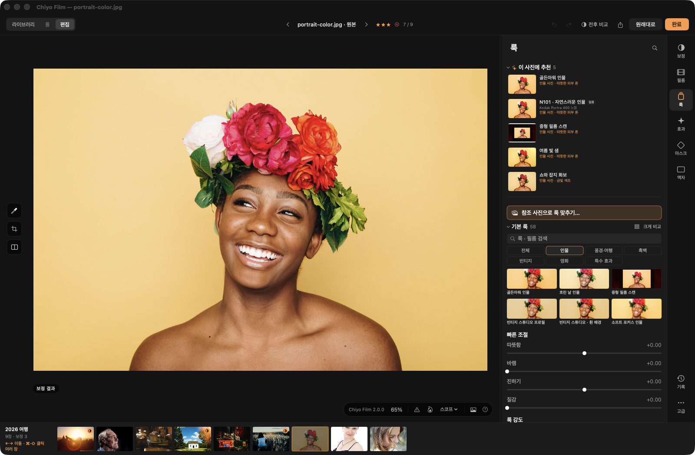
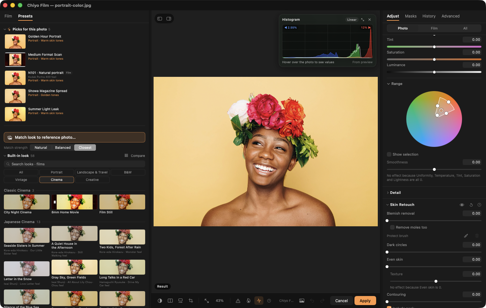

Photo library (culling · RAW Development · sync · virtual copies)
Export
The editor window
Choosing a film
Adjust tab ① Photo
Adjust tab ② Film (Spectral color science)
Presets · Built-in looks · Matching a reference photo
Masks
Crop · Rotate · Straighten
Frames · Backgrounds · Multi-photo layouts
History · Advanced (Snapshots, LUT export, 언어 · Language, problem reports)
Applying to multiple photos at once
Lightroom batch rendering
Keyboard shortcuts
FAQ · Troubleshooting
1. Installation
Quit Photoshop and Lightroom Classic. (Save any open documents first.)
Open ChiyoFilm-1.6.0.pkg. The package is unsigned, so if macOS blocks it, right-click › Open it in Finder, or go to System Settings › Privacy & Security › Open Anyway.
Once, in Lightroom: go to Preferences › External Editing › Additional External Editor › Choose, and pick Chiyo Film.app.
File Format: TIFF or PSD, Bit Depth: 16 bits/component
Color Space: the same one you normally use (ProPhoto RGB or Adobe RGB)
Preset › Save Current Settings as New Preset › “Chiyo Film”
You can install straight over an earlier version. Your presets, favorites and edit history are kept.
To uninstall, run this in Terminal: sudo "/Library/Application Support/Chiyo Film/1.6.0/uninstall.sh"
2. Opening photos
Lightroom Classic (external editing)
Select a photo and choose right-click › Edit In › Chiyo Film (⌥⌘E).
Choose “Edit a Copy with Lightroom Adjustments” and click Edit.
Make your edits, then click Apply (Return). The copy is saved and appears right next to the original in Lightroom.
Tip — RAW photos: If you use Lightroom, you can still set exposure and white balance there first and send the photo over. Without Lightroom, open RAW files in the photo library (chapter 3) and start with RAW Development.
Photoshop
Open a photo and choose Plugins › Chiyo Film › Open Chiyo Film Editor.
The first time, if Photoshop asks for permission to launch the editor, turn on “Remember my choice” and allow it.
When you apply, a “Chiyo Film · film name” layer is added at the top. One Undo removes it, and when you open the editor again it uses the photo without the earlier Chiyo layer, so effects never stack.
Supported: RGB 8/16-bit, sRGB · Display P3 · Adobe RGB · ProPhoto RGB. CMYK, HDR and transparent canvases are not supported.
Opening on its own
Drag a JPEG, TIFF or PSD file onto Chiyo Film.app to open it. Applying saves to the same file. Photos with transparent areas are opened over a white background.
3. Photo library (new in 1.7)
Without Lightroom you can open a folder, cull, develop RAW, finish like film and export. There is no catalogue: edits and ratings save automatically in a name.ext.chiyo file next to each photo. The original files are never changed.
Open Chiyo Film.app to see the start screen. Click Open Folder (⌘O) or drop a folder on the window. Subfolders are read too.
Switch views with the tabs at the top: Grid (G) · Loupe (E, one large photo) · Compare (C, 2 or 4) · Auto Cull · Edit (Enter).
The grid is split by capture date; the slider at the bottom sets the thumbnail size and the top right sets the order (capture time · file name · rating).
Culling (ratings · flags · colour labels)
Key
Action
Key
Action
1–5 / 0
Rating / clear
P · H · X · U
Pick · Hold · Reject · Unflag
6–9, ⇧6
Colour label (red · yellow · green · blue · purple)
←→
Previous · next photo
Space
Fit ↔ 100%
R
View the RAW decode
⌘Z
Undo culling
?
All shortcuts
With Auto advance on, flagging moves to the next photo (⇧+P/X does the opposite). RAW ratings and labels also go to .xmp so Lightroom and Bridge can read them.
Loupe: capture info, filmstrip, key hints and ‘Export N picks…’ at the bottom right
Selecting several · filters · smart collections
Click selects one, ⌘-click adds or removes, ⇧-click selects a range, ⌘A selects all — in the grid, the loupe and the editor's filmstrip.
Filter bar: rating · flag · colour label · edited / unedited · file type · blurry · eyes closed · out of focus · burst · best. The search field finds file names and tags.
Smart collections on the left: Edited · 4 stars & up · Picks · Possibly blurry · Eyes closed · Burst groups.
Auto-cull help
After a folder opens, photos are analysed in the background: bursts are grouped with a suggested best shot, and blur, missed focus, closed eyes and exposure are flagged. In the Auto Cull tab, per group: A accept · S skip · B make this the best. Suggestions never change flags you set yourself.
RAW Development
RAW photos get a RAW Development section under Basic (exposure · white balance · highlight recovery · shadows · noise…). macOS's RAW engine develops them, keeping up to about 2 stops above white so Highlights and Whites can bring back blown skies.
RAW opens at screen size first and the full resolution follows. Hold Space to see the photo before editing (including RAW Development).
Sony A7 V · A7R VI Compressed RAW 2 is converted once in the background to a DNG with the bundled LibRaw (the original stays untouched).
RAW+JPG pairs show as two photos by default; Library Settings can group them as one. Grouped, RAW · JPG at the top of the editor picks which file you edit (each keeps its own edit).
Right-click menus
Photos: Open in Editor · View in Loupe · Compare side by side · flags · rating · colour label · Create virtual copy · Sync edit · Apply previous edit · Apply look · Copy / Paste edit · Clear edit · Export · Copy / move originals · Select (all · none · invert · picks · edited) · Show in Finder · Copy file name. Right-clicking a photo outside the selection acts on it alone.
Folders: Show only this folder · Select all · Export this folder · Reload · Show in Finder · Copy path · Remove from recent folders. Smart collections: Show · Select all · Export these photos.
Same edit on many photos (sync · virtual copies)
Select several photos in the editor's filmstrip: ‘N selected · Sync… · Auto sync’ appears at the bottom left
Sync…: matches the other selected photos to this edit. Choose the parts (photo · skin · RAW Development · film and effects · crop · masks); by default everything except crop and masks.
Auto sync: while on, every slider you move here goes onto all selected photos at once.
Copy / Paste edit and Apply previous edit (the edit of the photo you just worked on): each photo keeps its own crop, masks and face regions.
Virtual copy (⌘'): another edit of the same photo without duplicating the file. It shows with a ‘Copy 1’ badge, has its own rating, flag and edit, and exports with a name like DSC09158-Copy1.
4. Export
Press ⌘E or Export… in the grid, loupe or editor. In the editor the sheet opens over the editor (bottom: ‘Reset · Export… · Done’).
Choose the scope at the top: Selected · Picks · All shown. ‘Export N picks…’ under the loupe sends the photos flagged Pick right away.
What are the photos for? Web / social JPEG · Print TIFF 16-bit · Instagram 4:5 · Original size · To Photoshop (PSD), plus ‘Save current settings as preset’.
Format (JPEG · HEIC · TIFF · PSD), size (long edge · short edge · % · original, never enlarging small photos), destination (default: a ‘Chiyo 내보내기’ folder inside the photo's folder).
Details: quality (with estimated size per photo and in total) · colour space · output sharpening · include frame / date stamp · metadata · file name template · subfolders · name conflicts.
Exports run in a background queue (pause, cancel) and are saved as separate files; originals stay as they are.
Copy / move originals tab: copies or moves the files as they are (with RAW+JPG pairs, .chiyo and .xmp) for delivery or backup.
5. The editor window
Left: film list · Center: preview · Right: Adjust / Masks / History / Advanced tabs
Area
What it holds
Left panel
The Film tab (154 films, viewed By type or By family, with search) and the Presets tab (Built-in look, My presets, Match look to reference photo). Drag the panel edge to resize it; the button at the top left collapses it.
Preview
Zoom and pan with the trackpad. Bottom bar: before/after, side by side, zoom level, clipping warnings, Scopes (Histogram · Waveform · RGB Parade).
Right panel
Adjust (Photo / Film), Masks, History (undo list), Advanced.
Bottom right
Cancel (Esc) · Apply (Return).
Scopes
Where the R, G and B traces overlap you see yellow, cyan, magenta and white. The white line is luminance.
The left and right triangles show the share of crushed shadows and blown highlights. Click them to show the clipped areas on the photo.
Hover over the photo to read the R·G·B·L values at that point. You can switch between Linear and Log, and between large and small.
6. Choosing a film
The thumbnails in the list are rendered from the photo you have open. Click one to apply it instantly.
Film names: each film is shown with Chiyo Film's own code and a description (for example N101 · Natural portrait). The small grey line underneath (for example “Kodak Portra 400 feel”) only tells you which film served as the reference; Chiyo Film is not affiliated with any film manufacturer. The first letter of the code is the type (N color negative · S slide · M black and white · C cinema film · I instant · X cross process · E experimental), and the first digit is the family.
By type / By family: By type groups films by how they render color (what they feel like) — Chiyo house, Color negative (gentle tonality, warm skin), Slide (rich color and contrast), B&W, Cinema film, Instant, Cross & Experimental. By family groups films that share the same roots (manufacturing line), such as “Series 1 · American all-round”. Sections can be collapsed, and there is a ‘Collapse all’ button. Type a code, description or reference film name in the search field above (for example portra, natural portrait, N101) to find a film; Korean names work too. The ★ button shows favorites only.
Click ☆ to add a film to your favorites. ↑↓ step through the films.
Original (no film) removes the film color and applies only your photo adjustments.
Choosing a film also loads that film's grain, halation, bloom and highlight compression, plus its recommended print medium. (For example, C601 · Cool nightscape comes with strong red halation, and high-speed films come with coarse grain.) Add or subtract from those values as you like. A slider's ↺ button or a double-click returns it to the film's value.
Film exposure (EV) at the bottom left sets the film exposure (formerly “Push / Pull”).
7. Adjust tab ① Photo
This is where you refine the photo itself. The order is the same as in Lightroom, and the film receives the photo as you have refined it. Use Photo / Film / All at the top to choose which part is shown.
All, Red, Green, Blue and Luminance channels (Luminance changes only brightness and leaves hue and saturation alone, so adding contrast doesn't make colors heavier). Click the curve to add a point, drag to adjust, drag it off or double-click to delete. Each channel has a complementary background (red↔cyan, green↔magenta, blue↔yellow). The curve applies to the final result after the film.
Color Mixer
Hue, saturation and luminance for 8 colors: red, orange, yellow, green, aqua, blue, purple, magenta. One color at a time (pick a swatch) or ‘Show all’ (24 sliders)
Color Grading
Shadows, midtones, highlights and global color wheels with luminance, Blending and Balance. Click a wheel or drag its point; hold ⇧ while dragging for fine control; double-click to reset
Precision Color
Lift, Gamma, Gain and Offset color wheels (darks, midtones, brights, overall) with luminance. Five curves: Hue vs Hue, Hue vs Sat, Hue vs Lum, Lum vs Sat, Sat vs Sat (add points, drag, double-click to delete, or use the Eyedropper to place a point on a color in the photo)
Skin Tone
All skin, Face skin and Body skin tabs; a reference color (Auto or Eyedropper); Uniformity (pulls skin colors toward the reference color to even out red or yellowish patches); Temperature, Tint, Saturation and Luminance. Open ‘Range’ to drag the range of colors to select (handles) and the reference point (center dot) on a color wheel, Show selection, and Smoothness
Detail
Sharpening; luminance and color noise reduction (detail, contrast, smoothness)
Skin Retouch
Automatically finds the face, eyes, eyebrows and lips and works on skin only: Blemish removal (dark spots, milia, red spots, brown marks — moles are kept unless you turn on ‘Remove moles too’; Protect brush), Dark circles, Even skin (+ texture), Contouring, Include neck, and Size. Pores, natural sheen, light and shadow, and edges (hair, background) are left untouched
Lens Corrections
Distortion (barrel/pincushion, edges filled automatically), Vignetting with midpoint, Defringe

Color Grading in the ‘Single’ viewSkin Retouch: every slider starts at 0. Blemish removal around 40–60 and Even skin around 30–50 look naturalSkin Tone: Uniformity with Temperature, Tint, Saturation and Luminance, and the ‘Range’ color wheel below
Speed Edit: hold Q Exposure · W Contrast · E Saturation · A Highlights · D Shadows · T Temperature and scroll or drag sideways to adjust without hunting for the slider (⇧ for fine steps).
In each section header, the 👁 button turns the section off briefly for comparison, ↺ resets it and ? opens help. Sections you have changed get an orange dot.
8. Adjust tab ② Film
Section
What it does
Color science
Spectral (new default) · Classic (the method before 1.6.0). See ‘Spectral color science’ below
Print medium
Lab scan (color and B&W), Slide scan, photo papers (Glossy · Matte · Warm Silver), measured print film and paper models (P101 · P102 · P201), Chiyo Baryta, Chiyo Log and more
Film
Overall amount (how much film look), Film strength, Film aging (expired film) and its color shift, Protect skin tones, Film format (half frame · 35mm · 6×4.5 · 6×6 · 6×7 · 6×9 · 4×5 — the larger the format, the finer the grain and the smaller the glow)
Development · Compression · Levels
Development contrast, saturation, Base fog, Development gamma, color separation, Color boost, Push/Pull (stops), Bleach bypass · Negative (creative) / Highlight compression / black and white points
Print
Print contrast, exposure and saturation; shadow, midtone and highlight toning and tint; CMY filters; Printer points R·G·B·Gang (1 point = 1/12 stop); Preflash (+ color); print shadow and highlight shape; print push/pull; Bleach bypass · Print (creative)
Glow
Bloom · Halation · Diffusion · Motion · Streak styles. Choosing a style shows only Amount, Range, Spread and Warmth (+ direction and softness); the rest is under ‘Detail’. Active styles are marked with a dot
Diffusion Filter
An in-front-of-the-lens diffusion filter: Black Mist (halo around highlights, blacks stay black) · White Mist (milky veil, pastel) · Glimmer · Cine Bloom. Amount, size and halo warmth. Use Masks › Effects › Diffusion Filter to exclude people or apply it to part of the photo
Grain
Amount, Grain size, color, Film resolution, shadow/midtone/highlight grain. The ‘Measured’ grain model sets the grain for each film from the manufacturer's datasheet granularity
Optics & Lens Effects
Edge blur, Veiling flare, Film resolving power, Add chromatic aberration (the color fringes of old lenses), Coma (comet tails on point lights near the edges)
Finishing · Light Leak · Damage
Vignette, light leaks (‘Position & direction on photo’: like a linear gradient mask — the centre line sets where the light enters, the round knob its direction, the outer line its reach; ‘Width’ for the sideways spread), dust, fibers, scratches and stains (‘Dust & fibre style’: Natural · Classic)
Overscan · Print Texture · Date Stamp
Film edges and sprocket holes (edge print reads like “CHIYO N101 ▶12”), halftone and paper texture, Date Stamp (type the date in one field: 19981113, 98 11 13, 1998.11.13 and so on; calendar, Capture date and Today buttons)
Diffusion Filter: none · Black Mist · White Mist 0.25/0.5/1 · Cine Bloom · Glimmer
Spectral color science (1.6.0)
Color science: Spectral · Classic at the top of Adjust › Film chooses how the film takes in color.
Spectral: the photo's light is received through the per-layer spectral sensitivities from the film datasheet (including the overlap between layers and interlayer effects). Deep reds and skin come out cleaner and less muddy, and skin looks a little more alive. Colors don't get stronger — they move in a direction closer to real film. Greys and exposure are identical in both modes.
When a negative is printed on the measured print media P101 · Print film (Kodak Vision 2383 feel) or P102 · Color paper (Kodak Endura feel), the print colors are computed spectrally too: skies and teals turn a more print-film cyan, and reds become deeper and warmer. Speed is almost unchanged.
It applies to 92 color films (54 color negative · 11 cinema · 18 slide · 7 instant color · 2 cross process). Black-and-white and creative films are unchanged.
Newly opened photos, choosing a film, built-in looks (including cinema looks), Picks for this photo and look matching all start in Spectral.
Edits, presets, snapshots, settings files and Photoshop re-edits saved before 1.6.0 open in Classic and render exactly as before. The status line tells you when this happens, and you can switch to ‘Spectral’ if you like. Presets saved in 1.6.0 remember the mode you chose.
Lightroom batch: built-in looks use Spectral; Last edit, My presets and settings JSON files use the mode they were saved with. Quick film settings has a ‘Color science’ menu.
Film exposure vs. Push/Pull: ‘Film exposure (EV)’ below the film list on the left changes exposure only (formerly Push / Pull), while Development › ‘Push/Pull’ changes the development time, so contrast and grain change too.
To soften the film look: lower Film › Overall amount. If a portrait is too bright: lower Basic › Highlights, or bring Film › Print exposure EV down slightly.
9. Presets · Built-in looks · Matching a reference photo
Picks for this photo
When you open a photo, the ‘Picks for this photo’ row at the top of the Presets tab automatically suggests 3–5 looks that suit it (the row can be collapsed). Each comes with a thumbnail rendered from your photo and a short reason (for example “Snow scene · Cool light”).
The picks weigh the photo's colors (dominant colors, warmth of the light, saturation) and the scene and mood most heavily, add result quality and the looks you use often, and choose looks with different moods. The analysis runs only on this Mac.
Click a pick to apply it instantly; ⌘Z undoes it.
Picks for this photo (CC0 photo)
Cinema looks (Built-in look › Cinema)
30 looks that follow the mood of a film scene: Classic Cinema 3 · Japanese Cinema 13 · Korean Cinema 6 · World Cinema 11. Each card shows a mood name and a small “feel” line, for example Seaside Sisters in Summer — “Kore-eda Hirokazu · Our Little Sister feel”.
Search by director, film or cinematographer (for example Kore-eda, Love Letter, Wong Kar-wai, Parasite, Look Back).
Each look is an interpretation: for every film we looked up the publicly available cinematography information (camera, film stock, processing) and measured the colors of actual scenes (black and white levels, color shifts by brightness, signature colors). The looks are not affiliated with or endorsed by the directors or studios, and the app contains no film stills.
Letterboxing is chosen separately under Frame & Background › Cinema (CinemaScope 2.39 · Vista 1.85 · Subtitled Scene). A cinema frame crops the photo to that ratio around the center (re-edit with R), and the frame stays when you change the built-in look. Change the subtitle under Text › first line.
Cinema look examples (CC0 photos) — left original · right lookCinemaScope 2.39 · Vista 1.85 · Subtitled Scene
Match strength: after matching to a reference photo, switching between Natural (keeps your photo's character) · Balanced · Closest (as similar as possible) applies instantly, with no recalculation.

Presets tab: Match look to reference photo, 28 built-in looks
Built-in look (28): Golden Hour Portrait, City Night Cinema, Vintage Slide, Documentary B&W and more, grouped as Portrait, Landscape & Travel, B&W, Vintage, Cinema and Creative.
My presets: save the current settings under a name. You can favorite, search, rename, export and import them.
Match look to reference photo: pick a photo you like and Chiyo Film finds and applies the film and settings closest to its color, tonality and grain.
Match strength: Natural / Balanced / Closest. Changing it after matching applies instantly, with no recalculation.
You can choose among 4 candidate films. The reference photo is shown small at the bottom left of the preview.
The light and the scene itself (backlight, shallow depth of field and so on) can't be transferred; the color and tonal mood can.
Quick adjust: Warmth, Fade, Richness and Texture in one place.
Copy and paste settings: ⇧⌘C / ⇧⌘V (⌥⇧⌘V to include masks). When you reopen the same photo, you can load its previous edit.
10. Masks
Masks let you apply different exposure, temperature, contrast, saturation, film effects and more to part of the photo. You can have up to 6 layers.
Shapes: Radial, Linear, Luminance range, Brush, Color range (pick the color with the eyedropper)
Automatic: Subject, People, Sky. In Lightroom batch rendering these are recalculated for each photo.
Combining: within one layer, combine shapes with Add (+) · Subtract (−) · Intersect (∩).
Radial and linear masks can be moved by grabbing anywhere in their wide inner area, not just the center dot, and the cursor and handle size change when you hover over a handle.
Photo adjustments: each layer can have its own Highlights and Shadows, Whites and Blacks, Texture, Clarity, Dehaze, Vibrance, luminance noise reduction and color (a small color wheel + hue and saturation). For example: Dehaze on an automatic Sky mask only, or lower Highlights on a radial mask over a face only.
Draw radial and linear masks by dragging on the photo, then use the handles to change position, size, rotation and feather. The brush has size, feather and flow; hold ⌥ to erase.
The overlay (red tint) hides briefly while you move a slider.
Masks stay in place on the photo regardless of cropping and rotation. Changing the crop doesn't move them.
11. Crop · Rotate · Straighten
Press R or the Crop button in the bottom bar to enter crop mode. The whole photo is shown with the crop area (rule-of-thirds grid) on top. Return or ‘Done’ applies it; Esc or ‘Cancel’ reverts.
The cursor tells you what will happen: diagonal arrows at the corners (resize), left-right or up-down arrows on the edges, a hand inside (drag to move the photo), and a rotate arrow outside (drag to rotate the photo). You can also grab the margins above and below the photo or just outside a corner.
While rotating, the crop rectangle stays upright on screen and the photo turns underneath it (the same as in Lightroom and Photoshop). A fine grid appears inside the rectangle while you rotate.
Ratios: Original, Free, 1:1, 4:5, 5:4, 2:3, 3:2, 16:9, 9:16, 65:24 panorama, 6:7 medium format, plus a portrait/landscape swap.
Straighten: turn on the Straighten tool in the bar and draw a line along a horizon (or a vertical post); the photo rotates so that line is level (or plumb). Set the angle directly with the slider (−45° to 45°), or use Auto straighten (⇧A) to find horizons and building lines. The photo is cropped automatically so no empty corners appear.
There are also buttons for 90° rotation and horizontal/vertical flips.
Grain size, vignette, glow, film edges and the like are scaled as if the cropped photo had been shot at that size. Saving writes the cropped size.
In Photoshop the document changes to the cropped size, but the cropped parts of the original layer are hidden, not deleted (restore them with Image › Reveal All; a single ⌘Z undoes everything).
Because crops differ from photo to photo, they are not included in presets, pasted settings or batch rendering by default (choose ‘Include crop’ to apply them too).
Frame & Background is at the very end of the ‘Film’ group in the Adjust tab. It places the finished photo on a larger canvas. The photo itself is unchanged, and no film effects are applied to the margins or background.
26 preset frames in groups: Basic · Color · Text · Film · Texture. The tiles are drawn with your current photo.
Colors taken from the photo: a Color Palette that places 3–6 of the photo's colors in the margin (color codes optional), a background painted in a photo color (lighter, darker, complementary, midtone), an Aurora background that blends photo colors, and a Duotone blur in two colors.
Text: up to two lines in the margin. Type your own text or use the tokens {date} (date stamp → capture date → today, in that order), {film}, {code} and {desc}; the Korean tokens {날짜} {필름} {코드} {설명} work too, and in the English interface {film} and {desc} use the English description. Four fonts (Serif, Sans serif, Typewriter, Handwritten), with size, letter spacing, color, alignment and position. If the text needs more room, the canvas grows to fit.
Film: 35mm Film Strip, Contact sheet (red grease-pencil marks), torn-paper edges, masking tape or clips, dust and light leaks on the background. ‘Variation’ changes the shapes.
Texture backgrounds: paper, linen and canvas, plus Fiber paper, Concrete, Coarse linen, Wood grain and Marble.
Manual controls: canvas ratio (Margin only, Original, 1:1, 4:5, 3:4, 9:16, 16:9, 2:3, 3:2, A4), margin and bottom margin, position, background, Shadow, Rounded corners and Border. The controls are arranged in collapsible groups.
Saving keeps the photo's resolution and enlarges the canvas. Frames are included in presets and batch rendering by default (uncheck ‘Include frame & background’ to leave them out). When applied to several photos, {date} uses each photo's own capture date. In Photoshop only the canvas is enlarged and the original layer is left as is.
Multi-Photo Layout (2–4 photos on one canvas)
Grid of four (4:5) and a side-by-side layout with a film-strip frame
File › Create Multi-Photo Layout… (⇧⌘L). Add 1–3 more photos to the current one and arrange them in a new window. The editor window stays as it is.
9 layouts (Side by side, Stacked, large + small, rows or columns of three, Grid of four and more) plus Swipe strip (one photo per panel joined into a strip, Instagram-style). Ratios: Photo ratio, 1:1, 4:5, 9:16, 3:4, 2:3, 3:2, 16:9. Spacing between photos.
Edit per cell: Current edit, that photo's previous edit, Last edit, My presets, Built-in look, Original.
Drag a photo in the preview to position it, and pinch on the trackpad to scale it. Hold ⌥ and drag to another cell, or drag the photo cards below onto each other, to swap places.
Frame & Background (background, margins, shadow, color palette, text, film borders and so on) is applied once to the whole layout.
Export: long edge 1080–6000 px, JPEG · TIFF 16-bit · PNG · PSD 16-bit. A swipe strip saves both the joined image and one file per panel (name-1, name-2 …).
13. History · Advanced
History: every change is listed; click an entry to go back to that step. ⌘Z / ⇧⌘Z.
Snapshots: save the current state and compare against it.
Export as .cube: save the colors of the current look as a 3D LUT (65³, sRGB) for use in other software (Premiere, DaVinci Resolve, Final Cut and so on). Effects such as grain, glow and vignette, and masks, are not included.
Settings file: export and import settings as JSON.
Create Problem Report File: creates a text file with the version, environment and logs. If something goes wrong, please send this file (no photos are included).
언어 · Language
The whole editor (menus, panels, sliders, help, film and look names, dialogs) can be used in English or Korean. By default it follows macOS's preferred languages (English unless Korean comes first).
Choose Automatic · 한국어 · English under 언어 · Language at the top of the Advanced tab or in the app menu. The change takes effect the next time the editor opens; your current edit stays as is.
The Lightroom plug-in follows this setting, or Lightroom's own language if you haven't chosen one. The Photoshop menu command follows Photoshop's language.
Film and look search works in both English and Korean (for example “natural portrait”, “portra”, “자연스러운 인물”).
Changing the language doesn't change the rendered photos, settings or saved files.

The English interface: 언어 · Language at the top of the Advanced tab
14. Applying to multiple photos at once
File › Apply to Multiple Photos… (⇧⌘B) or the button in the Advanced tab. Photos are processed right in the editor, without Lightroom.
Add photos or folders (drag and drop works). Settings: Current edit · Last edit · My presets · Built-in look.
Format: same as the original · TIFF 16-bit · JPEG (quality 92) · PSD. Location: next to the original (name-Chiyo, then -2, -3 … if the name is taken) or a folder you choose. Existing files are never overwritten.
Painted masks and crops are left out by default (check ‘Include’ to apply them), and automatic Subject, People and Sky masks are recalculated for each photo.
There is a progress bar and a Cancel button. Photos that can't be read are listed with the reason while the rest continue. When it's done, click ‘Show in Finder’.
15. Lightroom batch rendering
Select several photos and choose File › Plug-in Extras › Chiyo Film: Apply to Selected Photos…
Settings to apply: choose the editor's ‘Last edit’, a Built-in look, My presets, Quick film settings, or a settings JSON file.
By default the results are saved in the same folder as the original as name-Chiyo.tif (then -2, -3 … if the name is taken; nothing is overwritten) and are stacked above the original in the catalog so you see them right away.
Painted masks and crops are left out by default (they differ per photo; check ‘Include’ to apply them). Automatic Subject, People and Sky masks are recalculated for each photo.
16. Keyboard shortcuts
Action
Key
Action
Key
Apply
Return
Close (cancels while drawing a mask)
Esc
Show before (while held)
Space
Hide both panels
F
Fit ↔ 100%
Double-click photo
Previous / next film
↑↓
Undo / Redo
⌘Z / ⇧⌘Z
Copy settings
⇧⌘C
Paste settings (keep masks)
⇧⌘V
Paste settings (including masks)
⌥⇧⌘V
Mask overlay on/off
O
Change overlay color
⇧O
Brush size
[]
Brush feather
⇧[⇧]
Erase with brush
⌥ + paint
Number field: 1 step / 10 steps
↑↓ / ⇧+↑↓
Crop mode
R
Apply to Multiple Photos
⇧⌘B
Create Multi-Photo Layout
⇧⌘L
Auto straighten (crop mode)
⇧A
Speed Edit
QWEADT + scroll/drag
Reset slider to default
Double-click name or slider
Shortcut list
? or ⌘/
Library: Open folder
⌘O
Library: Export
⌘E
Library: Grid · Loupe · Compare
G · E · C
Library: Virtual copy
⌘'
Library: Rating · flags
1–5 · PHX
Library: Go to (number · file name)
⌘J
17. FAQ · Troubleshooting
I can't see the result in Lightroom
When you open a photo through external editing, it is saved only when you click Apply (Return). Batch rendering adds results to a stack above the original when ‘Add to the Lightroom catalog’ is on. If it was off, bring the files in with File › Import Photos and Videos.
Will a PSD open if I chose PSD?
Yes. It is saved to the same file as a flat PSD without layers, and Lightroom reads it as is.
I get a message about “transparent areas”
It means the transparent areas were filled with white when the photo was opened. The result is saved as opaque.
Chiyo Film isn't in Photoshop's Plugins menu
Run the installer again and restart Photoshop. If it still isn't there, check under Plugins › Manage Plugins that Chiyo Film is enabled.
“Unidentified developer” warning
Right-click the installer in Finder › Open, or go to System Settings › Privacy & Security › Open Anyway.
Will my old edits change color after updating to 1.6.0?
No. Edits saved earlier open with ‘Classic’ color science and look exactly as before. To see them with the new method, set Adjust › Film › Color science to ‘Spectral’.
Are the film colors identical to real film?
The films are expressive models tuned with reference to published characteristic curves, datasheets and scans. A color or grain match with real film is not guaranteed.
Film names and trademarks
Films are named with Chiyo Film's own codes and descriptions. Real film, manufacturer, director and movie names appear only as a “feel” reference (for example “Kodak Portra 400 feel”, “Kore-eda Hirokazu · Our Little Sister feel”) to describe what a look was modeled on. These names are trademarks or titles of their respective owners; Chiyo Film is not affiliated with, sponsored by or endorsed by any of them.
Terms of use
This is a free test version for personal, non-commercial use. You may use the resulting photos freely; redistributing the program is not permitted. The full terms, including the warranty disclaimer and limitation of liability, are shown in the installer, in Chiyo Film.app/Contents/Resources/LICENSE.txt, and in LICENSE on the release page. An English translation is provided as LICENSE.en; it is for convenience only, and the Korean text (LICENSE) governs. Keep your original photos backed up separately while using the software.
Reporting a problem
Create a file with Advanced tab › Create Problem Report File and tell us which photo (format, bit depth, color space) and what you did. Please don't post personal photos in public places.